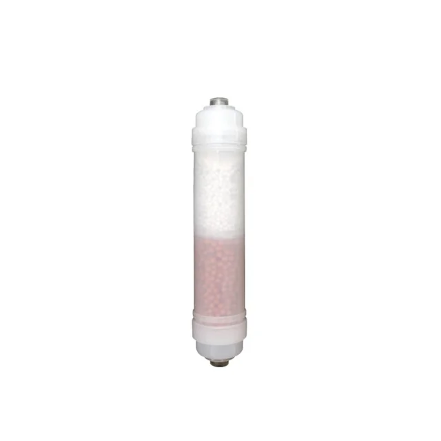
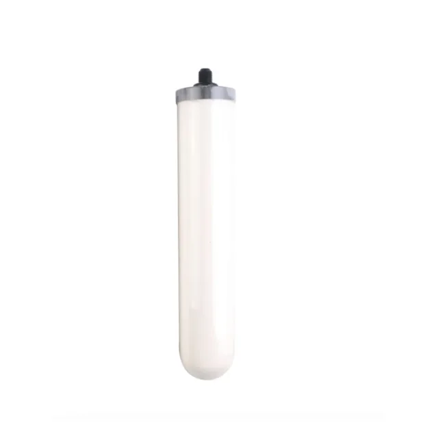
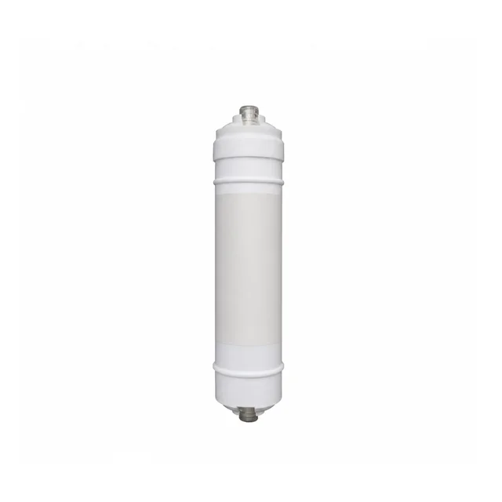
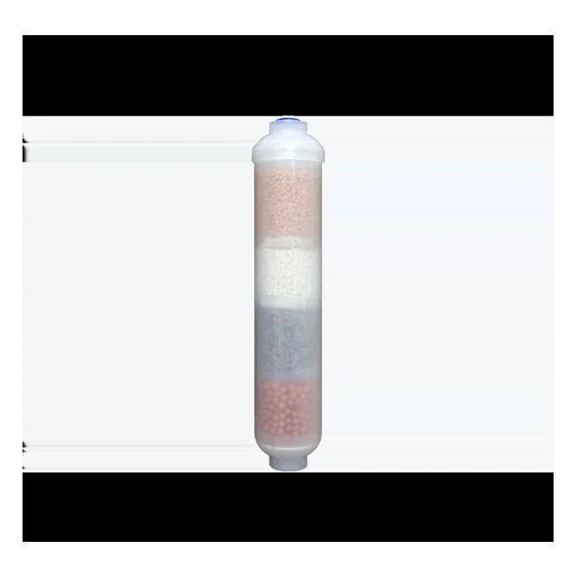
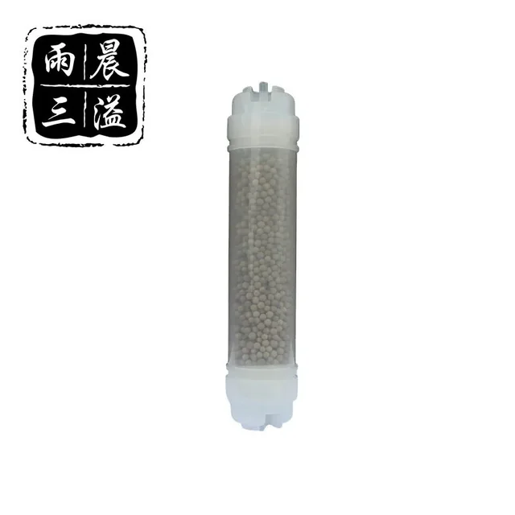
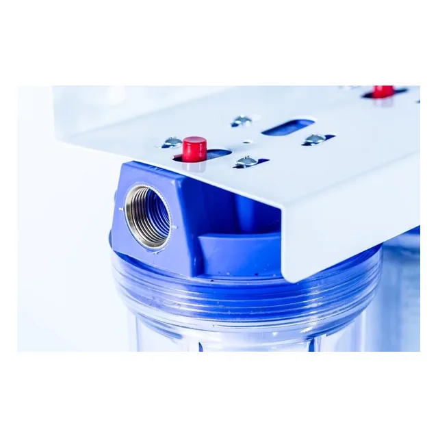
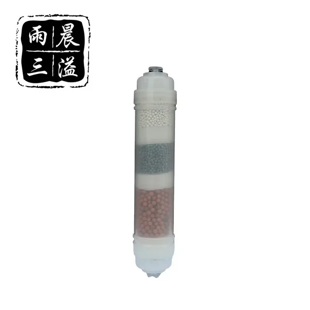
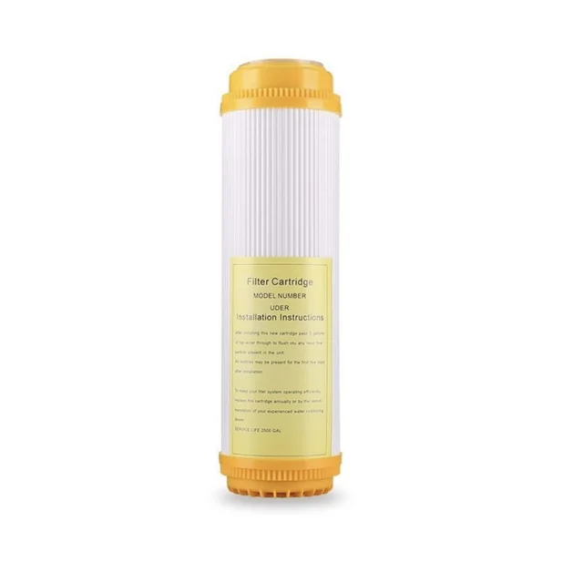

Antibakteriāls mineralizācijas filtra kārtridžs
Funkcionāls kārtridžs ar antibakteriāla un mineralizācijas pildījuma kombināciju. Precīzs pildījums, formāts un vieta sistēmā jāapstiprina pasūtījumam.
Skatīt produktuŠajā kategorijā apkopoti filtra kārtridži, kuru izvēli nosaka pildījuma funkcija, korpusa formāts un vieta filtrācijas secībā. Vienāds ārējais izmērs nenozīmē vienādu pildījumu vai pielietojumu.

Funkcionāls kārtridžs ar antibakteriāla un mineralizācijas pildījuma kombināciju. Precīzs pildījums, formāts un vieta sistēmā jāapstiprina pasūtījumam.
Skatīt produktu
Mazgājams keramikas filtra kārtridžs mehānisko piemaisījumu filtrācijas pakāpei. Pirms pasūtījuma jāsaskaņo 0,2 μm nominālā pakāpe, izmērs un savietojamais korpuss.
Skatīt produktu
Vairāku atšķirīgu filtra kārtridžu komplekts secīgai ūdens priekšattīrīšanai un pēcapstrādei. Faktiskais elementu sastāvs jāapstiprina katram pasūtījumam.
Skatīt produktu
Inline kārtridžs ar katjonu apmaiņas sveķu pildījumu. Savienojums, pildījuma daudzums un lietošanas vieta jāsaskaņo ar sistēmu.
Skatīt produktu
Inline funkcionāls filtra kārtridžs ar speciālu pildījumu. Pildījuma sastāvs un paredzētā funkcija jāapstiprina rakstiskajā piedāvājumā.
Skatīt produktu
Inline kārtridžs ar maifāna akmens pildījumu kā atsevišķa funkcionālā pakāpe. Savienojums un pildījuma konfigurācija jāapstiprina.
Skatīt produktu
Vidējās pakāpes kārtridžs daudzpakāpju ūdens filtrācijas sistēmai. Pildījums, savienojuma konstrukcija un vieta filtrācijas secībā jāapstiprina konkrētajai konfigurācijai.
Skatīt produktu
Inline mineralizācijas kārtridžs funkcionālai pēcapstrādes pakāpei. Minerālu pildījums, savienojums un sistēmas pozīcija jāsaskaņo.
Skatīt produktu
Filtra kārtridžs ar jonu apmaiņas sveķu pildījumu ūdens mīkstināšanas pakāpei. Izmērs, sveķu veids un reģenerācijas iespēja jāapstiprina.
Skatīt produktuFunkcionāls filtra kārtridžs ir elements, kura izvēli nosaka konkrētais pildījums un uzdevums, nevis tikai ārējais izmērs. Sveķu, minerālu, keramikas un kombinēto materiālu versijām pirms pasūtījuma jāpārbauda savietojamība ar korpusu un paredzēto filtrācijas secību.
Salīdzināšanu sāciet ar pildījuma funkciju un tikai pēc tam pārbaudiet kārtridža formātu. Sveķu, minerālu, keramikas un kombinēto materiālu elementi nav savstarpēji aizvietojami tikai tāpēc, ka tiem ir līdzīgs ārējais korpuss. Jāsaskaņo arī plūsmas virziens, savienojums, filtrācijas secība un vieta, kas pieejama elementa nomaiņai.
Šajā kategorijā nav publicēti vienoti kalpošanas laika, plūsmas vai veiktspējas solījumi. Šie rādītāji ir atkarīgi no konkrētā pildījuma, ieplūdes ūdens, sistēmas un ekspluatācijas. Rakstiskajā piedāvājumā jānorāda tieši tas materiāls un formāts, kas tiek piegādāts konkrētajam pasūtījumam.
Pirms pasūtījuma salīdziniet ne tikai kārtridža nosaukumu, bet arī tā uzstādīšanas vietu un savietojamību ar esošo korpusu. Nosūtiet izmantotās sistēmas fotoattēlu vai rasējumu, zināmo kārtridža izmēru un savienojumu, filtrācijas secību, ūdens avotu, vajadzīgo daudzumu un iepakojuma prasības. Tādējādi piedāvājumā var precīzi nošķirt sveķu, minerālu, keramikas un kombinēto materiālu versijas.
Piedāvājumam norādiet vajadzīgo funkciju, kārtridža izmēru vai savienojumu, uzstādīšanas vietu, ūdens avotu, daudzumu un iepakojuma prasības.
Pieprasīt piedāvājumu